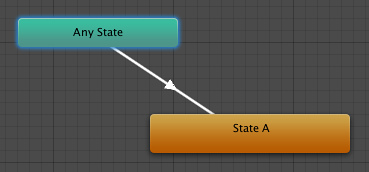

Unity Manual>User Guide>Creating Gameplay>Mecanim Animation System>Bringing Characters to Life>Animation State Machines>Animation States
Animation States
Animation States are the basic building blocks of an Animation State Machine. Each state contains an individual animation sequence (or blend tree) which will play while the character is in that state. When an event in the game triggers a state transition, the character will be left in a new state whose animation sequence will then take over.
When you select a state in the Animator Controller, you will see the properties for that state in the inspector:-

| Speed | The default speed of the animation |
| Motion | The animation clip assigned to this state |
| Foot IK | Should Foot IK be respected for this state |
| Transitions | The list of transitions originating from this state |
The default state, displayed in brown, is the state that the machine will be in when it is first activated. You can change the default state, if necessary, by right-clicking on another state and selecting from the context menu. The solo and mute checkboxes on each transition are used to control the behaviour of animation previews - see this page for further details.
A new state can be added by right-clicking on an empty space in the Animator Controller Window and selecting from the context menu. Alternatively, you can drag an animation into the Animator Controller Window to create a state containing that animation. (Note that you can only drag Mecanim animations into the Controller - non-Mecanim animations will be rejected.) States can also contain Blend Trees.
Any State
Any State is a special state which is always present. It exists for the situation where you want to go to a specific state regardless of which state you are currently in. This is a shorthand way of adding the same outward transition to all states in your machine. Note that the special meaning of Any State implies that it cannot be the end point of a transition (ie, jumping to "any state" cannot be used as a way to pick a random state to enter next).

(back to Animation State Machines)
Page last updated: 2012-10-18